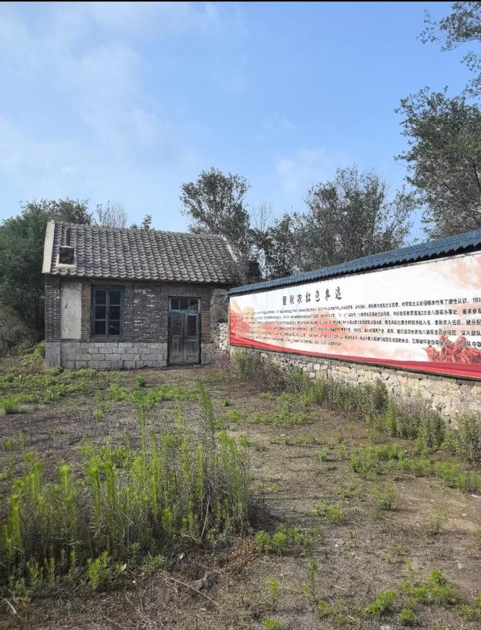

董秋农故居位于辽宁省大连市金普新区金州区韩家村，是抗日英雄董秋农的出生地。故居为砖石结构硬山式建筑，屋顶覆黑瓦，包含正房、厢房及石围墙院落，建筑面积约260平方米。
目前故居已被列为辽宁省第一批不可移动革命文物，但因所在村庄动迁面临拆迁风险。截至2025年4月，故居存留一间砖瓦房及相关红色事迹介绍，但整体保护状况堪忧。
董秋农（1910—1939）原名董万丰。1910年出生于辽宁省金县（今大连市金州区）二十里堡韩家村。1937年9月参加八路军，在八路军总部敌工部工作。1938年加入中国共产党。1938年10月被任命为八路军东进抗日挺进纵队政治部敌工部长。1939年10月，在山东陵县陶家伏击日军战斗中牺牲，时年29岁。
董秋农是牺牲在抗日战场上的第一个留学生，也是八路军728位团以上干部烈士中，在前线为国捐躯的唯一一位敌工部长，牺牲时离29岁生日不到一个月。日本反战同盟领导人森健曾回忆，1944年11月15日该盟在延安召开大会时，“首先向对日军工作中光荣牺牲的（日、中、朝方）同志默哀”。其中所列名单的头一位，就是董秋农。
 ← 返回大连地图